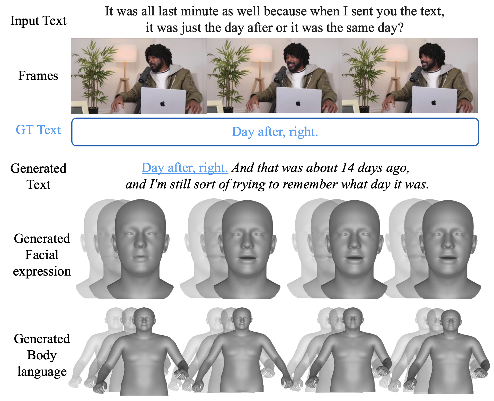

Research
I work on Human-Aligned AI, focusing on making AI systems that generate, perceive, and reason in a way that enables them to coexist and collaborate with humans.
|
News
[2025.09] I will join LG AI Research as a Research Scientist Intern.
[2025.06] Our paper V.I.P. and DisCoRD are accepted to ICCV 2025.
|
Publications

V.I.P: Iterative Online Preference Distillation for Efficient Video Diffusion Models
Jisoo Kim, Wooseok Seo, Junwan Kim, Seungho Park, Sooyeon Park, Youngjae Yu
ICCV, 2025
project page /
arXiv
DisCoRD: Discrete Tokens to Continuous Motion via Rectified Flow Decoding
Jungbin Cho *, Junwan Kim *, Jisoo Kim, Minseo Kim, Mingu Kang, Seuneun Hong, Tae-Hyun Oh, Youngjae Yu
ICCV, 2025 [Highlight]
arXiv

Speaking Beyond Language: A Large-Scale Multimodal Dataset for Learning Nonverbal Cues from Video-Grounded Dialogues
Youngmin Kim *, Jiwan Chung *, Jisoo Kim, Sunghyun Lee, Sangkyu Lee, Junhyeok Kim, Cheoljong Yang, Youngjae Yu
ACL main, 2025
arXiv

EgoSpeak: Learning When to Speak for Egocentric Conversational Agents in the Wild
Junhyeok Kim, Min Soo Kim, Jiwan Chung, Jungbin Cho, Jisoo Kim, Sungwoong Kim, Gyeongbo Sim, Youngjae Yu
NAACL Findings, 2025
arXiv
DEEPTalk: Dynamic Emotion Embedding for Probabilistic Speech-Driven 3D Face Animation
Jisoo Kim *, Jungbin Cho *, Joonho Park, Soonmin Hwang, DaEun Kim, Geon Kim, Youngjae Yu
AAAI, 2025
project page /
arXiv
|